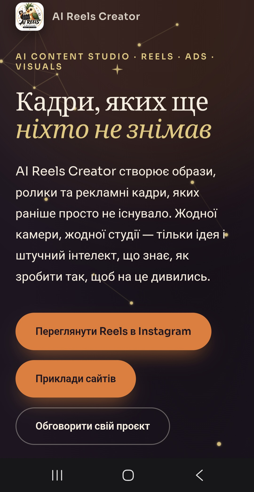
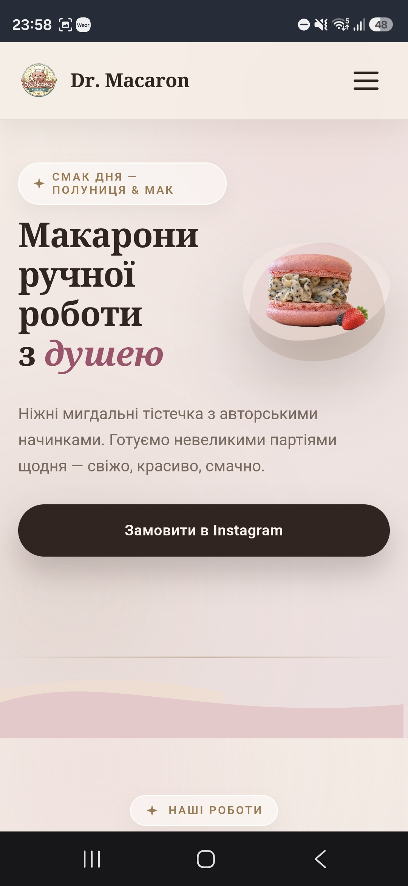
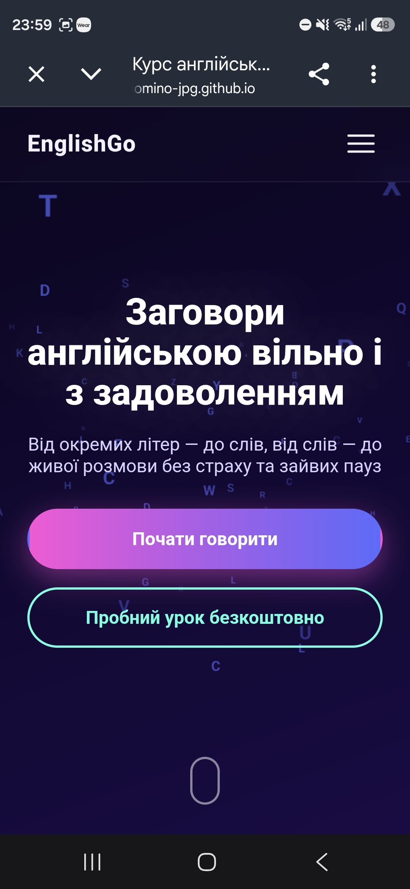
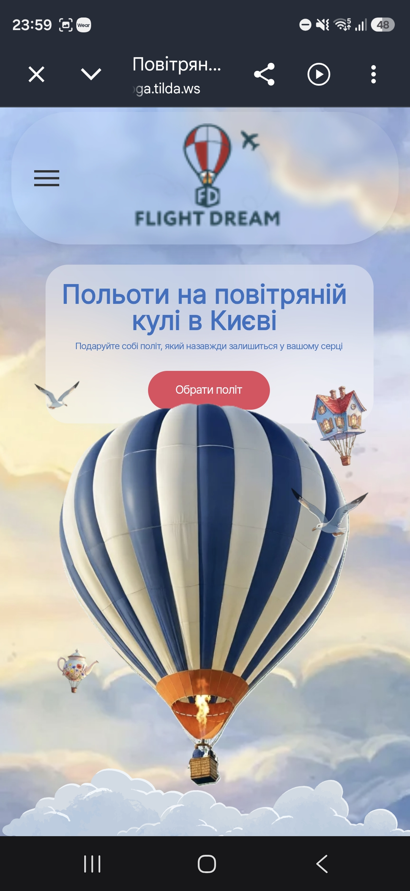
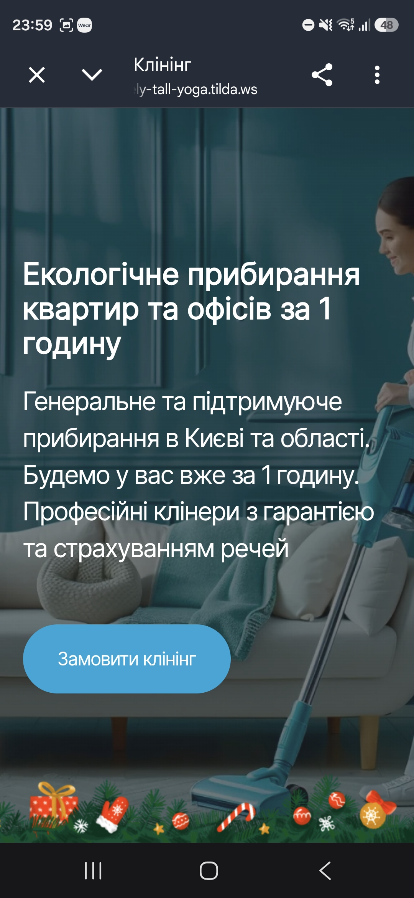

Карта робіт

AI Reels Creator
Промо-сайт для студії, що створює AI-рілси, рекламні кадри та візуали. Темна атмосферна тема із зоряним мотивом і акцентом на заклик переглянути роботи в Instagram.

Dr. Macaron
Сайт-візитка для кондитерської, що продає макарони ручної роботи. Тепла кремово-пудрова палітра і фото десерту крупним планом створюють апетитний, затишний настрій.

EnglishGo
Сайт курсу розмовної англійської. Фіолетово-неоновий градієнт і фон із розсипаних літер передають динаміку навчання, а два CTA ведуть на різні сценарії: старт курсу або пробний урок.

Pip's Orchard
Ігровий сайт для вивчення англійської дітьми: літери, рахунок і щоденний чек-лист у форматі "фруктового саду". Дружній маскот Pip, теплі кольори та великі кнопки роблять взаємодію зрозумілою навіть для наймолодших користувачів.

Дитячий центр розвитку sensoryIQ
Сайт дитячого центру розвитку sensoryIQ у Києві. М'яка пастельна палітра, розділи про програми (сенсорна інтеграція, логопедія, супровід дітей з РАС і РДУГ), відео занять та форма запису формують довіру батьків із перших секунд.

Flight Dream
Сайт для польотів на повітряній кулі в Києві. Небесна ілюстрація з кулею, чайником і будиночком-аеростатом одразу передає атмосферу свята й мрії про політ.

Клінінгова служба
Сайт клінінгової компанії з прибирання квартир та офісів у Києві. Спокійна синьо-бірюзова палітра і фото затишного інтер'єру формують довіру ще до першого дзвінка.